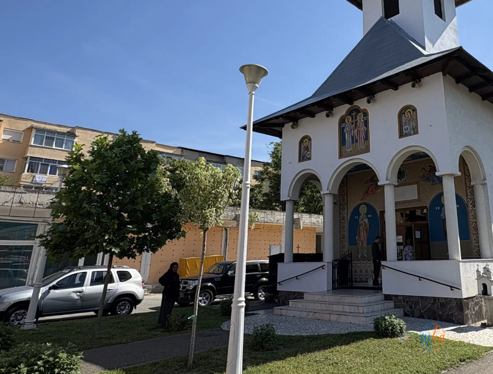
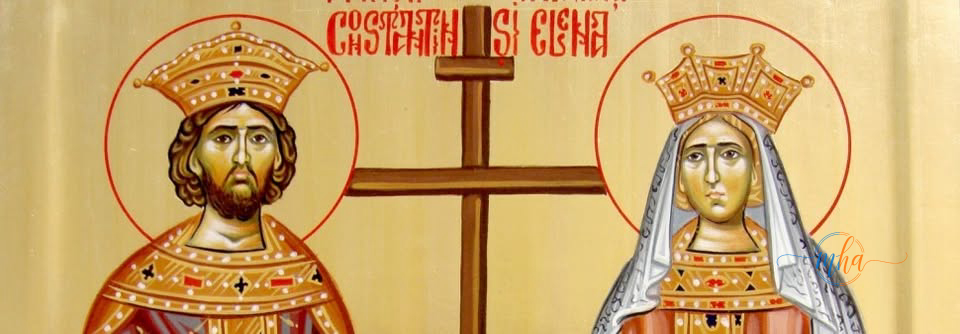
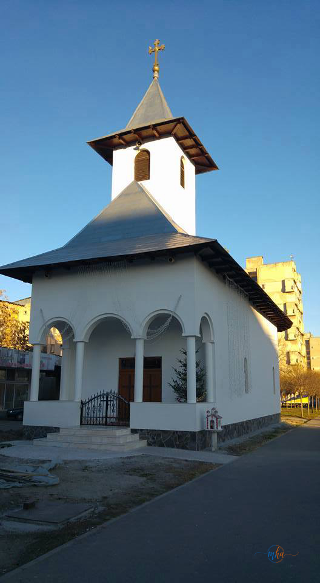

Redacția MehedintiAzi.ro urează sănătate, fericire și tot binele tuturor celor care poartă numele Constantin, Elena, Costică, Costel, Costela sau Lenuța. La mulți ani!
Ziua de 21 mai 2026 a adus în Drobeta Turnu Severin o dublă sărbătoare cu o deosebită încărcătură spirituală. Credincioșii ortodocși din municipiu au prăznuit în aceeași zi Înălțarea Domnului și Sfinții Împărați Constantin și Elena — două dintre cele mai importante sărbători din calendarul ortodox, întâlnite, în acest an, în aceeași zi de joi.
Încă de la primele ore ale dimineții, lăcașurile de cult din municipiu au fost pline de oameni veniți să participe la sfintele slujbe și să îi pomenească pe cei trecuți la cele veșnice. Severinenii au venit cu împărțituri, colivă, colaci și alte bucate pregătite pentru pomenirea rudelor și a apropriaților plecați dintre cei vii — un obicei creștin profund înrădăcinat în tradiția locală.

Numeroși credincioși au participat și la slujba solemnă oficiată la biserica din municipiu care poartă hramul Sfinților Constantin și Elena, unde atmosfera a fost una de sărbătoare autentică. Oamenii s-au rugat pentru sănătate, liniște și binecuvântare pentru familiile lor, iar preotul paroh a rostit cuvinte de învățătură despre semnificația duhovnicească a zilei.
Înălțarea Domnului — semnificație și tradiție
În tradiția ortodoxă, Înălțarea Domnului este prăznuită la 40 de zile după Paște și simbolizează ridicarea lui Iisus Hristos la cer, în văzul Apostolilor, pe Muntele Măslinilor. Este una dintre cele 12 mari praznice împărătești ale anului liturgic ortodox și marchează totodată sfârșitul perioadei pascale.
Tot în ziua de Înălțare sunt pomeniți eroii și ostașii neamului — cei căzuți în război pentru apărarea patriei. Ziua Eroilor, cum mai este numită această sărbătoare, are o semnificație aparte pentru comunitățile din Mehedinți, unde memoria celor sacrificați pentru țară este ținută cu sfințenie. În multe localități din județ au fost organizate în această zi ceremonii religioase și militare la monumentele eroilor.
- Celebrată la 40 de zile după Învierea Domnului (Paște)
- Una dintre cele 12 praznice împărătești ale Ortodoxiei
- Numită și Ziua Eroilor — se pomenesc ostașii căzuți pentru patrie
- Marcheaza încheierea perioadei pascale de 50 de zile
- Zi liberă legală în România
Sfinții Împărați Constantin și Elena — cine au fost

Sfântul Împărat Constantin cel Mare este una dintre cele mai importante figuri din istoria creștinismului. Prin Edictul de la Milan (313 d.Hr.), el a acordat libertate deplină de credință creștinilor persecutați și a pus capăt veacurilor de martiriu. Constantin a fost primul împărat roman care a îmbrățișat creștinismul și a convocat Primul Sinod Ecumenic de la Niceea (325 d.Hr.), unde a fost definit dogma Sfintei Treimi.
Sfânta Elena, mama sa, este venerată în mod deosebit pentru că a întreprins un pelerinaj în Țara Sfântă, unde, conform tradiției, a descoperit Sfânta Cruce pe care a fost răstignit Iisus Hristos. A ctitorit mai multe biserici în Palestina și a fost un model de credință vie și de milostenie creștină.
„Prin Constantin și Elena, creștinismul a ieșit din catacombe și a luminat lumea. Ei nu au mărturisit prin moarte, ci prin viața întreagă pusă în slujba lui Hristos."
O dublă sărbătoare pentru severineni
Întâlnirea, în același an, a celor două sărbători în aceeași zi a dat o și mai mare strălucire celebrării de la Drobeta Turnu Severin. Numeroși severineni care poartă numele Constantin sau Elena și-au sărbătorit joi onomastica, primind în casă rude și prieteni veniți să le ureze sănătate și bucurie.

Tradiția ortodoxă românească leagă strâns Înălțarea Domnului de pregătirea spirituală pentru Rusalii, care vor fi prăznuite peste zece zile. Credincioșii sunt îndemnați să continue rugăciunea și postul de miercuri și vineri, pregătindu-se pentru pogorârea Sfântului Duh.
Ziua Eroilor la Drobeta Turnu Severin
Înălțarea Domnului este în România și Ziua Națională a Eroilor, zi în care sunt comemorate sacrificiile ostașilor care și-au dat viața pentru apărarea patriei. Municipiul Drobeta Turnu Severin, cu bogata sa istorie militară, marchează cu respect această zi. Monumentele eroilor din oraș devin în această zi locuri de reculegere și rugăciune, unde autorități, militari și cetățeni depun coroane de flori și aprind lumânări în memoria celor dispăruți.
Tradiția pomenirii eroilor la Înălțarea Domnului are rădăcini adânci în spiritualitatea românească: creștinii cred că sufletele celor morți în luptă sunt și mai aproape de Dumnezeu în această zi de mare praznic, când Hristos Însuși S-a înălțat la cer.
Tradiții populare de Înălțare în Mehedinți
În lumea rurală mehedințeană, Înălțarea Domnului este marcată prin câteva obiceiuri transmise din generație în generație. Femeile aduc la biserică colivă, colaci împletiți și lumânări pentru cei adormiți, iar bărbații vin dimineața devreme la slujbă, înainte de a porni la câmp sau la stână. Se crede că în această zi roua dimineții are puteri vindecătoare și că cerurile sunt deschise — rugăciunile rostite cu evlavie ajungând mai repede la Dumnezeu.
Tot de Înălțare, în satele de pe Valea Cernei și din zona Podișului Mehedinți, se organizează mese comunitare la care sunt invitați și cei mai săraci dintre consăteni, în semn de milostenie și solidaritate creștinească.
Echipa MehedintiAzi.ro le urează tuturor celor care poartă aceste sfinte nume sănătate, pace în suflet, fericire alături de cei dragi și tot binele din lume. La mulți ani!
Sursa: Observatie proprie / Calendar Ortodox 2026 / Redactia MehedintiAzi.ro